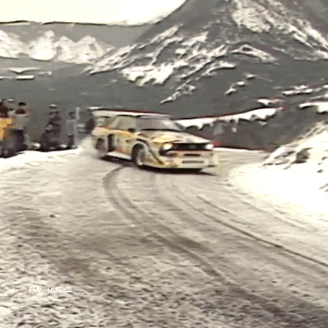

My recent interests have been in rally racing and aviation. In my opinion, rally drivers are the most skilled kind of racers there are. If you've ever seen rally before, then you know it takes guts to go down mountainous, bumpy, roads at blazing speed. These drivers go so fast that they need a co-driver to give well-timed callouts for upcoming twists and turns.

Not to mention, it's the most stylish form of racing as well.
It's tons of fun setting up my racing rig and taking on the same corners that rally drivers do in the video game, Dirt Rally 2.0.
Now with aviation, it's been a lot more of a newer interest. I've been into cars and racing for a while, but I've been enjoying learning new things about aviation every day. The fact that humanity learned how to fly and conquer the skies just about a century ago is a wonder.

I've recently been playing DCS, a military flight simulator game. During my free time, I'm learning about the flight controls and tactics of operating the F/A-18 Hornet.
I'd like to dream that someday I can take to the skies in reality.
Thanks for reading!